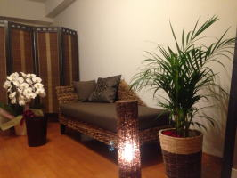
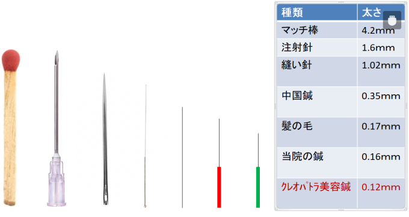

鍼灸、整骨、接骨、美容鍼灸、マッサージ、整体、カイロプラクティック、O脚矯正、不妊、エステでお困りの方はTeaching Beauty鍼灸マッサージ整骨院へ。
電話でのご予約・お問い合わせはTEL.03-6413-7803
〒154-0014 東京都世田谷区新町3-21-1さくらウェルガーデン301号室
当院についてconcept
当院について

当院ではどこに行っても治らない、病院もあてにならない。など、最後の砦の治療院としております。お困りが強い方、どうしても治したい方は是非、ご相談下さい。
当院はどこに行っても治らない方、難病でお困りの方を対象としております。当院の高い技術を体験してみて下さい。
当院の内装はバリを意識した内装になっております。都会のど真ん中に癒しの隠れ家を創りました。
完全予約制・完全個室制ですので、他の患者様を気にせず、ゆったりとした空間の中で施術を受けられます。
当院は特別な施術法を行っているため、毎日全国から泊まり込みで施術に通われている方が沢山いらっしゃいます。お困りの疾患によって宿泊数が異なりますので、
まずは電話やメールにてご相談ください。
また、当院の院長は芸能人、モデル、野球選手、サッカー選手、バレーダンサー、政界(元首相)など様々な方のメンテナンスをしていた経験を持っております。
是非、当院の高い技術を一度体験してみて下さい。
鍼灸施術・美容鍼灸の不安について（Q&A）
【鍼灸施術のQ&A】
鍼は痛くありませんか？
髪の毛より細い鍼で施術するためほとんど痛みを感じることはございません。
また、ほとんどの患者様が鍼を打った時に何をされたのかが全く分からないほどです。
それでも、どうしても鍼は苦手・怖いようでしたら当院では『刺さない鍼』のご用意もございます。
ツボを純金のツボ押し棒にて刺激したり、皮膚をこすって刺激したりして行いますので全く痛みを伴うことはございません。また、皮膚に鍼を刺すものではないので赤ちゃんやお子様が喜んでやって欲しいと手を出してくるほどです。
『刺さない鍼』でも鍼を刺した時と同様の効果を得ることが可能です。
当院の患者様の3割は刺さない鍼での施術をしておりますので、どうしても鍼が苦手というようでしたら是非一度ご相談くださいませ。

※効果には個人差があります。
お灸は熱くありませんか？
基本的にお灸は気持ちの良い刺激で行うものなので熱くて我慢するようなことはございません。悪い子に『灸を据える』という言葉があるのでよく勘違いされてしまいますが、現在のお灸は美容的な問題もあるために心地よい程度の刺激のみになります。
しかし、まれに熱さよりもチックという感覚を伴う場合がありますが、それもほとんど感じない程度の刺激になります。
お灸も無理には行いませんので苦手そう、怖いという場合はご相談ください。
鍼灸の副作用はありますか？
鍼灸は薬のように副作用がでることはありません。鍼灸は副作用がないのが特徴の一つとされています。また、鍼灸は免疫を上げる働きがあるために風邪を引いた時のような症状がでることがございます。
風邪の時を想像してみてください。
体がだるくなったり、熱がでたり、関節が痛くなったり、眠くなったりすると思います。
これは体が風邪のウイルスを外に追い出そうとして起こる反応で好転反応といいます。
鍼灸の場合も風邪の反応のような症状が出て病が悪化したように感じる場合がありますが、通常は2〜3日で治まります。
すべての患者様がなる反応ではありません。
体の病が重い方は外に毒素を出そうと体の免疫が頑張っているため好転反応が出る場合がございますが、一時的なものであり、この反応後にすぐに調子が上がってきますのでご心配ありません。
体内に溜まっていた毒素が一気に表面に出てきた状態であり、体を良くするためには、体の中から毒素をすべて出す必要があるのです。毒素が中に溜まっているから病気が治らないのです。
金属アレルギーです。鍼灸施術を受けても大丈夫でしょうか？
金属アレルギーがある患者様にも問題なく使えます。
鍼を刺した状態で置く時間も短いですし、皮膚と接する面積も少ないからです。
それでも不安な場合は金属のパッチテストを行ったり、『刺さない鍼』での施術も検討いたしますので金属アレルギーがある患者様はスタッフに金属アレルギーがある旨をお伝えください。
鍼灸施術と西洋医学との併用はできますか？
はい、併用できます。
鍼灸の得意分野、西洋医学の得意分野がそれぞれあるので全く問題ないです。
手術の後、入院中、薬の服用をしていても全く問題なく鍼灸を行えます。
手術前に免疫を上げたりすることが西洋医学ではできませんが鍼灸ではできます。
そのように西洋医学と鍼灸を合わせて施術することにより、相乗効果でさらに施術効果を高めるる事もあります。
近年では東京大学を筆頭に各大学病院にも鍼灸科を設けている大学がほとんどですので、鍼灸と西洋医学の融合がより効果を発揮すると思います。
植木で例えると、葉っぱが枯れた、葉っぱが病気になったという時に、悪くなった部分を切ったり薬をつけたりするのが西洋医学。
植木の土が固くなっていたり、根詰まりしていたり、土の栄養がない、水のあげすぎで根腐りしている状態などが東洋医学になります。こちらの場合いくら葉っぱを切り取っても葉っぱに薬をつけても土を変えないと変わりません。これが鍼灸の考え方になります。
だからこそ、鍼灸施術と西洋医学は得意分野が異なるのです。
今、お薬を飲んでいます。鍼灸施術を受けても大丈夫でしょうか？
問題ございません。どのような薬を飲んでいるか教えていただけましたら、施術の参考に
させていただきますので、そのような場合はお薬手帳をお持ちください。
今、妊娠中ですが施術を受けても大丈夫でしょうか？
前置胎盤、つわりやむくみ、逆子、妊娠トラブルなど妊娠中の患者様の施術を得意としております。妊娠の時期に合わせて施術を行っていきますので詳しい状態をスタッフにお伝えください。
当院は不妊施術から妊娠中、産後調節と、赤ちゃんができるための体質改善から、産んだ後の産後のケアまでトータルでの施術ができます。
そのため妊婦さんでも出産する直前の日まで施術を行うことができます。
また、産後に骨盤の調節をする産後骨盤矯正や産後に姿勢を矯正する産後姿勢矯正も行っている都内では希少な鍼灸整骨院となります。
※妊娠中の患者様は同意書を取ってからの施術開始となりますので来院時に認印以上の印鑑をお持ちください。
男女を問わず利用できますか？
はい、ご利用いただけます。
2人同時に受けることはできますか？
サロン内には4台のベットがございますので、4名様まで同時に施術が可能でございます。
ただし、ご予約状況によっては、1名様ずつの施術をお願いする場合もございます。
詳しくはご予約の際にお問い合わせください。
当日いきなり伺っても大丈夫ですか？
申し訳ございませんが完全予約制となっていまので、必ず電話もしくは予約ホームでご予約してから来院下さい。
【クレオパトラ美容鍼のQ&A】
クレオパトラ美容鍼にはどのような効果がありますか？
美容鍼が特に得意としているのは『しわ、お肌の張り、肌質改善』を回復させることです。
しわの場合、ほうれい線、眉間のしわ、額のしわ、目尻のしわ、口元の下のブルドック線、など様々なしわに対応できます。
その他にも、リフトアップ、アンチエイジング、お顔のたるみ、お肌の透明感、シミ改善、眼の下のクマ、ニキビ顔、毛穴の引き締め、薄毛対策など様々な効果が得られます。
美容鍼を行うことにより5年後10年後が同年代の方と大きな差を生みます。
同年代で綺麗な芸能人を浮かべてみて下さい。
その方は基が良いのはもちろんですが、しっかりとしたケアを欠かさず行っていた為、今が綺麗なのです。
高い化粧品を使って外からケアするより、内から変える事が大切です。
どんな高い化粧品より効果を実感いただけると思います。
クレオパトラ美容鍼はどの位、効果が持続しますか？
美容鍼は初回施術の場合は3週間で元に戻ってしまうとお考え下さい。
その後、回数を重ねていくうちに4週間持続し、8週間持続しと徐々に効果が持続していきます。お肌の体質やしわを消すのには定期的な施術が必要となります。
当院では最低12回は通わないと体質が変わらないと考えています。そのような方にはお安くなる回数券の販売もしております。
長い年月かけて少しずつ、しわやお肌のトラブルなどが出てきているので、ゆっくりと時間をかけて改善していく必要があります。
原因は肌表面ではなく、体の内側にあるため、ある程度時間が必要なのです。
しっかりとした施術をすることにより、しわが薄くなり、お肌の状態も良くなるため10歳若く見える事もしばしばです。当院のテーマは『10歳若く見られる施術を患者様に施す。』です。美容外科の看護師さんや女医さんも通う高い技術を体験してみて下さい。
人によっては整形以上の満足度を得らると言われます。また、整形と違う点は副作用もなくメンテナンスを怠ったら顔が崩れるというものでもございません。
しかし、整形をしてしまうと一生メンテナンスをしないと顔が崩れて行ってしまうのです。
芸能人でも、あの人、昔の方が綺麗だったのに〜という方がいますよね。
そのような方は老いとともに更なる整形をしないと現状の維持ができなくなり、最終的には醜い顔になっていってしまうのです。
当院でもメンテナンスはおススメしておりますが、3カ月に1回です。また、メンテナンスをしないからと言って顔が崩れるものでもございません。
若くいたい！綺麗でいたい！そのためには内から変える必要があります。
クレオパトラ美容鍼に興味はありますが、痛くないのか心配です。
痛みはございません。 
ほとんど何をされているかわからない患者様がほとんどです。
美容鍼の施術中、気持ちがよくて寝てします方も多くいらっしゃいます。
鍼と聞くと注射針を想像してしまいますが、全く別物とお考え下さい。
注射は嫌だけど鍼なら大丈夫と言う人も沢山いるほどです。
実は私も注射が子供の頃から大嫌いで、今でも採血の時に手に汗握って顔をそらしてしまう程です。そんな私でも鍼は全く痛くないので安心して施術を受けられます。
美容鍼で検索すると沢山鍼灸院が出てきて、どこの鍼灸院が良いか全くわかりません。
鍼灸は鍼灸院選びよりも施術する人選びが大切です。
なぜかと言うと技術者によってで雲泥の差があるからです。同じツボに同じように鍼を打っていても全く効果が異なります。その奥深さが鍼灸なのです。
鍼灸は芸術的要素があるため、鍼灸師教員の立場から見ても鍼灸学校の1学年120人いても毎年3〜6人しか有能な人間はでません。それを患者様が探し出すのは宝さがしのようなもの、だから安いからいいではなく。誰に受けるかで全く効果が異なるのが鍼灸なんです。
鍼灸技術は学力でもなく天性の力になるので芸術的要素が大きく関係します。陽の気が強い鍼灸師は患者様が受けた時に効果がでやすいです。担当の鍼灸師があっちが痛い、ここが悪い、鍼灸をしてもらって改善したから目指したという方はあまりお勧めできません。
他院で一度、美容鍼を受けて効果がないと感じた方でも美容鍼が効かないと言う前に、施術者を変えてみて下さい。
どんな病でもセカンドオピニオンは必要なのです。良い先生に出会うまで諦めないで下さい。美容室も担当美容師が辞めてしまうと合う担当者を探すのが大変ですよね。
当院ではNHKの「ひるとく」でも3年間レギュラー出演し、美容部門だと『簡単にできる小顔の方法』や『一瞬でお顔の浮腫み改善する方法』などをご紹介している程の鍼灸院です。
当院の院長は現在、月2回程NHKのテレビ番組にレギュラー出演をしております。
また、当院の院長は現鍼灸学校教員であり、鍼灸学校にて美容鍼灸を教えている程です。
当院では美容鍼灸セミナーを定期的に開催し多くの鍼灸師に美容鍼灸の実技と理論を教えております。
年齢はいくつまでクレオパトラ美容鍼はできますか？
当院では年齢制限を設けておりません。
『若くなりたい・綺麗になりたい』との気持ちはいくつになってもあるものです。
当院には80代の患者様も多く通わられています。
年齢が高い患者様は『私なんか美容鍼に通っていると周りに恥ずかしいから言えない』と言われますが、誰でもいくつになっても綺麗でいたいものです。黙ってお友達に差をつけましょう。
当院の美容鍼で通われている患者様は10代〜80代まで様々いらっしゃいます。
あなたの綺麗になりたい気持ちを全面でサポートさせて頂きます。
男性なのですがクレオパトラ美容鍼はできますか？
問題ございません。施術いただけます。
近年は男性の患者様も増え美容に対する意識が変わってきたと思います。
面接、就職活動、お見合い、婚活、結婚式など大切な催しの前にメンテナンスをすることで相手への印象が大きく変わります。
男性の方ほど女性と比べるとお肌のケアをあまりされていないので、効果をすぐに実感いただけます。歴然の違いです。美意識が高い男性は、いつまでもかっこよく、清潔感があるのでいくつになってもモテます。いつまでもかっこよくいたいですよね。
男性芸能人はいつまでも若くカッコいいですよね。男性芸能人の多くは美容鍼や美容施術をされてアンチエイジングされています。
人前にでる職業の方は是非1度体験してみて下さい。
どれ位のペースで何回くらいクレオパトラ美容鍼に通うものなのでしょうか？
当院では2週に1回か1ヵ月に1回のペースで8〜１2回通って頂いております。
肌のターンオーバーを加速するため、なるべく施術期間をあけずに施術する事によりお悩みが早く改善されます。
やると決めたらしっかりお困りを改善しましょう。困った時、悩んでいるなら即行動です。
後になればなるだけ、なかなか治りにくくなり、さらに時間とお金がかかってしまいます。
美容鍼が気になるようでしたら無料相談でご相談下さい。
当院では無理な勧誘は行っておりません。
施術をしたい受けたい患者様のメンテナンスで忙しいので勧誘などしません。
他で美容外科治療（美容外科など）を受けていますが、美容鍼と併用しても大丈夫でしょうか？
当院の施術を受けながら、美容外科に通われている方も沢山いますので問題ありません。
ただし、美容外科手術をされている場合は必ず施術前にお申しで下さい。
施術する際の参考とさせて頂きます。
顔に鍼を打つと青いアザ（内出血）ができることがありますか？
内出血することはございます。しかし、通常は内出血はいたしません。
内出血するということは、血管が弱くなっている証拠です。
血管は鍛える事ができません。
これから例え話をします。輪ゴムをお考え下さい。
輪ゴムも時間が経つと劣化し、だんだん固くなり、しばいには切れてしまいます。
血管も全く同じなのです。
血管を劣化させないためにはどうしたらよいかというと、
『脂分を控える、塩分を控える、カリウムの多い食べ物を食べる、サウナの後で水風呂に入らない』などです。
美容鍼で内出血した場合は毛細血管の再生が行われるため、血管が新しく生まれ変わります。そのため、毛細血管の流れが悪くなった部分は出血させて新しい血管に作り替えた方が肌の血色もシミもかわります。しかし、あえて内出血を作るような施術はしておりません。
美容鍼で出血してしまった方は、『食習慣や生活習慣を注意しなさい』とご自身の血管から警告が出ているのです。
つまり、内出血するかどうかで体の血管が弱っているかどうかを確認する事もできます。
当院では施術のみでなく、血管に良い生活習慣、セルフケア方法、食事、洗顔方法などのアドバイスなどを行っておりますのでご来院時にお困りごとをご相談下さい。
クレオパトラ美容鍼灸後に注意することはありますか？
美容鍼後には次の事にご注意下さい。高価な施術効果を半減する事になります。
美容鍼を少ない回数で結果を得たいようでしたらお家でも注意する必要があります。
１、お酒
お酒の場合は浮腫みを増してしまいますので出来る事なら2~3日はお控え下さい。
特に注意していただきたいのは3回目までの施術が終了するまでは特にお気を付け下さい。
4回目以降は体も鍼の刺激になれてくるので少しお酒を飲む位なら問題ありません。
２、入浴
当日はシャワー程度にして下さい。
しっかり入浴すると内出血や浮腫みの原因になります。
３、たばこ
鍼灸当日に煙草を吸うと血管にダメージを与えやすくなります。
そのため、せっかく鍼灸施術をして血色がよくなっても効果を半減させてしまいます。
当日以外は少しでしたら問題ありません。
しかし、元々、たばこは活性酸素が多く出すため、顔を老化させてしまい美容的要素は全くありません。
そのため、煙草を辞められない方ほど、美容鍼灸をしてお顔に溜まった活性酸素を出す必要があります。
４、運動
施術当日のみ激しい運動をお控え下さい。
その日はゆったりとお過ごし下さい。そうすることにより、お顔に免疫が沢山集まり施術効果を倍増してくれます。
５、食事
当日は軽めに食事にして下さい。
あまり、多く食べてしまうと免疫が消化に集中してしまい、施術効果を半減させます。
その中でも特に亜鉛、コラーゲン、ビタミンCを施術後3日は天然の食材で注意して摂るようにしてみて下さい。できれば1週間つづけられるとさらに美容鍼の効果を高めてくれます。
また、腸を冷やすと美容効果が半減しますので体温（36℃）より低い食べ物はお控え下さい。
６、睡眠
美容鍼当日は22時~27時までの間により多く睡眠を摂って下さい。
成長ホルモンが多く出るためです。
成長ホルモンは1日の身体のリセットボタンとしての役割があります。
この成長ホルモンがお体やお肌のメンテナンスを行っているのです。
特に施術後1週間は22時には寝るようにしてみて下さい。施術効果の持続力が全然違います。22時に毎日に寝ている方はやはり肌が綺麗です。
施術後、体がだるくなりました。大丈夫でしょうか？
全く問題ありません。
免疫がお体の修復を行っているために体がだるくなります。風邪の時に身体がだるくなるのは免疫が体の修復を行っているからなのです。
免疫がよく動いでいる時は体がだるくなります。
それは鍼がよく効いているあかしでもあるので、なさらず早めに寝て下さい。
次の日にはだるさはなくなっています。
体がだるくなるというのことは、体が早く修復して体を休ませて欲しいと合図しているのです。
施術後にアザができました。これは消えますか？
また、どのくらいで消えるのでしょうか？
アザは通常1~２週間で消えます。
しかし、糖尿病がある方、血が固まりにくくなるお薬を飲んでいる方はもう少し時間がかかる場合がございます。
しかし、必ず消えるものですのでご心配なさらないで下さい。
出血があるということは血管の再生をし、さらに綺麗なお顔になるということですので喜ばしいことです。出血と再生を繰り返せば必ず今のお顔の状態よりも良くなります。
しかし、本来は美容鍼をしても出血などしないのですが、出血するということはすでに血管にダメージを受けている状態なのです。内出血を起こす方は300人に1人位の割合です。
ごくまれな現象です。
美容鍼をして内出血をしたのなら、今後の食習慣や生活習慣を見つめ直すきっかけとしてください。
施術の後、鍼を刺した部分がちくちくします。大丈夫でしょうか？
問題ありません。
通常ですと2~3日で治まります。ひどい方でも1週間程で治まります。
この症状はお顔に悪い毒素が溜まっていて外に出たいと訴えている状態です。
免疫が一生懸命働いているためちくちくとした反応がでます。
そのような症状がある場合はまずその部分を1分間圧迫した後に気持ちが良い強さでもみもみすれば大概はその場で治まります。
しかし、あまり心配な場合はお気軽にご相談下さい。
Ｔｅａｃｈｉｎｇ Ｂｅａｕｔｙ

〒154-0014
東京都世田谷区新町3-21-1
さくらウェルガーデン3F
TEL：
03-6413-7803
→アクセス
診療時間
【通常診療】
月火金土
午前：09:00〜13:00
午後：15:00〜19:00
木曜日
午前：休診
午後：15:00〜19:00
※当日予約可
休診日
水、木（午前）、日、祭日
夜間診療
月火木金土／19:00〜21:00
※通常価格の1.5倍料金
※当日の19時までにご予約の場合のみ
深夜・早朝診療
月火木金土／7:00〜9:00
※通常価格の2倍料金
※前日の19時までにご予約の場合のみ
交通事故・労災・
各種保険取扱い